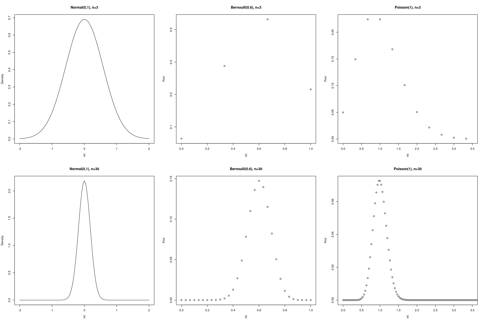
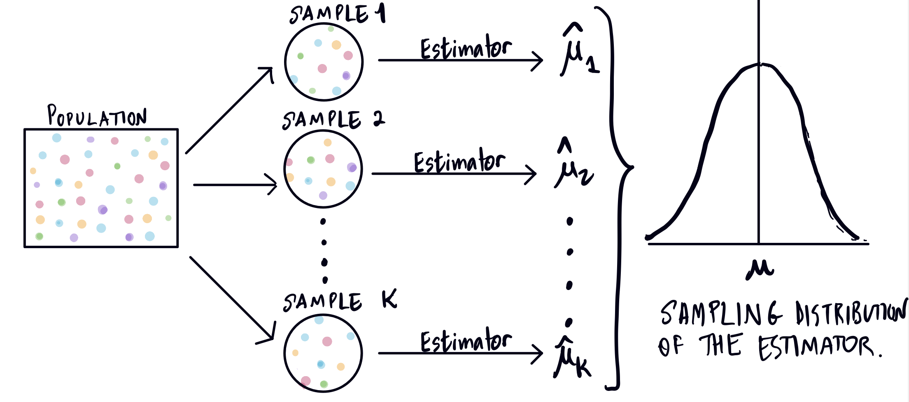
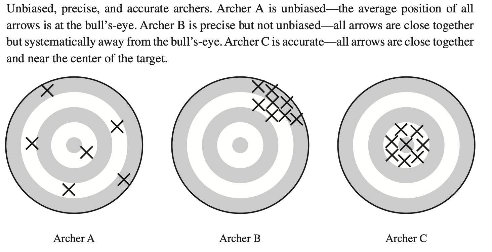

Sampling distribution of the Mean
Corresponding reading
Questions/Goals for this Module
- What is the sampling distribution of an estimator?
- What does it tell us about the estimator?
- What is the sampling distribution of a particular estimator, the mean?
The Sampling Distribution
Now that we have discussed strategies for how to get an estimator, the next question we have is how good is our estimator? How do we compare different estimators?
Let’s return to our simple example of estimating the mean \(\mu\) of a population from before. We have an estimate \(\hat{\mu}\). How close is this estimate to the true value \(\mu\)? Note that our estimator is random. Each time we take a random sample, we will get a different value of the estimate. The particular sample we observed results in a particular value of \(\hat{\mu}\), but it is just a realization from the overall distribution of \(\hat{\mu}\). We call the distribution of an estimator its sampling distribution. This is just a special name for the probability distribution of the estimator, which is a random variable. The randomness of the estimator is rooted in the randomness of the sample data.

We can use this distribution to ask questions about how \(\hat{\mu}\) behaves.
Two important aspect of the distribution we will consider to begin with:
- Expectation of \(\hat{\mu}\): \[E(\hat{\mu})=\mu.\] We are interested in this quantity to understand whether on average is \(\hat{\mu}\) equal to \(\mu\)?
Definition 1 (Unbiased) When an estimator \(\hat\theta\) has \(E(\hat\theta)=\theta\) we call an estimator unbiased. It says that, over repeated realizations of our data, the average value of \(\hat\theta\) is \(\theta\).
- Standard deviation of \(\hat{\mu}\) We can consider the standard deviation of our estimator, \[\sqrt{var(\hat{\mu})}=\sqrt{E[\hat{\mu}-E(\hat{\mu})]^2}.\] This allows us to ask, how much does the estimate vary from its mean from sample to sample? If our estimator is equal to the population parameter on average, then our estimator’s sampling distribution spreads about the mean. The smaller the standard deviation, then the tighter the spread of \(\hat{\mu}\) over repeated samples, and thus the more accurate the estimator. The below illustration from a text of Lohr, illustrate the different variations of the expectation and variance by analogy to an archer shooting at a target.

We have a special term for the standard deviation of an estimator:
Definition 2 (Standard Error) The standard deviation of the sampling distribution of an estimator is called the standard error.
Among other things, the term “standard error” helps to distinguish it from the standard deviation of our individual observations \(X_i\).
Caution
Do not confuse the sampling distribution of \(\hat{\theta}\) with the distribution of an individual data points \(X_i\). The individual \(X_i\) are random and have a expectation and variance as well, and these will not necessarily be the same as those of \(\hat{\theta}\), depending on our estimator and the parameter we are estimating.
Direct calculation of Mean and Variance of Estimator
When we can write down an equation for our an estimator as a function of the data, we can try to calculate these quantities directly.
Example: Estimating the Mean
If we assume that our data all share the same mean \(\mu\) and we are estimating \(\mu\) with \[\hat{\mu}=\frac{1}{n}\sum_i X_i,\] we can immediately write down the mean and variance of our estimator \(\hat{\mu}\). \[E(\hat{\mu})=\frac{1}{n}\sum_i E(X_i)=\frac{1}{n}\sum_i \mu=\mu\]
Note
The last step used the assumption that all our data shared the same mean, \(E(X_i)=\mu\). Notice we have used that same assumption twice – once to determine that we wanted \(\hat{\mu}\) to be our estimator and once to determine the expected value of the sampling distribution of \(\hat{\mu}\). This is an internally consistent choice of assumptions, and that gets us to the above result.
But it is often useful to keep in mind you don’t have to be internally consistent, i.e. you could use different assumptions for choosing your estimator and for evaluating the behavior of your estimator. In fact it can be useful not to have the same assumptions! It’s very reasonable question to ask the question: given that I’ve chosen \(\hat{\mu}=\frac{1}{n}\sum_i X_i\) to be my estimator, how might it behave if my initial assumptions were wrong? For example, what if 10% of my data were contaminated and had a different mean? Then the \(E(\hat\mu)\) might not be the same as what we derived above.
Asking these kinds of questions, where you purposefully look what happens when the assumptions you used for creating your estimator are not true, often fall under the evaluation of the estimator’s robustness to assumptions.
Similarly, we can use the assumption of independence to get the variance of our estimator, \[var(\hat{\mu})=\sigma^2_{\bar{X}}=\frac{1}{n^2}\sum_i var(X_i)\] We can again add yet another assumption – that all of the \(X_i\) have the same variance, \(var(X_i)=\sigma^2\) – and get \[var(\hat{\mu})=\frac{1}{n^2}\sum_i var(X_i)=\frac{1}{n^2}\sum_i \sigma^2=\frac{\sigma^2}{n}\] This gives us the standard error for our estimate \(\hat{\mu}\) as \(\sigma/\sqrt{n}\).
Note
It is very important property that we like to see of our statistical estimators: that with more data, the variance of the estimator gets smaller, so more and more tightly focused around the parameter \(\theta\) that we want to estimate.
Exercise/Question
What if our data was not independent, what would would be the variance of our estimator \(\hat{\mu}\)?
Example: Proportion
Let’s continue our mean example above, but suppose our data \(X_1,\ldots,X_n\) are binary, taking on values \(0,1\). Then all of the above calculations still hold true, but there is a lot of important simplification.
For binary data, we’ve seen that \[E(X_i)=P(X_i=1).\] If I continue my assumption that \(X_1,\ldots,X_n\) all have the same mean, this means we are trying to estimate \[\pi=P(X_i=1)\] Our estimator remains the same, \[\hat{\pi}=\frac{1}{n}\sum_{i=1}^n X_i.\] but as we’ve already noted, the average of the \(X_i\) will be the proportion of the sample with \(X_i=1\).
Then our above result holds, \[E(\hat{\pi})=\pi\]
But when we look at the variance of our estimator, in our previous example, we let \(\sigma^2=var(X_i)\). But in the case of Bernouilli \(X_i\), we know \[var(X_i)=\pi(1-\pi).\] So I don’t need to define a new parameter for the variance – if I know the mean, I also know the variance.
Therefore, the above results for the variance of our estimator \(\hat{\pi}\) can be simplified, \[var(\hat{\pi})=\sigma^2_{\hat{\pi}}=\frac{1}{n^2}\sum_i var(X_i)=\frac{\pi(1-\pi)}{n}\]
Example: Simple Regression
Recall we have numerous ways we can express the estimator \(\hat{\beta}_1\), \[ \hat\beta_1=\frac{\sum_{i=1}^n Y_iX_i-n\bar{Y}\bar{X}}{\sum_{i=1}^n X_i^2-n\bar{X}^2}=\frac{\sum_{i=1}^n(X_i-\bar{X})(Y_i-\bar{Y})}{\sum_{i=1}^n(X_i-\bar{X})^2}=\frac{\sum_{i=1}^n(X_i-\bar{X})Y_i}{\sum_{i=1}(X_i-\bar{X})^2} \] The first equality we showed in the earlier module on the MLE estimate of \(\beta_1\) (we use \(\sum_{i=1}(X_i-\bar{X})^2=\sum_i X_i^2-n\bar{X}^2\) and similarly for the numerator). The second equality follows because \(\sum_{i=1}^n(X_i-\bar{X})=0\).
Remember in our simple regression model, we are conditioning on \(X_i=x_i\), i.e. treating them as fixed and non-random. So for expectations, they will behave like constants.
Expectation of \(\hat{\beta}_1\)
I’m going to use the middle expression for finding the conditional expectation of \(\beta_1\) (it works either way, but is slightly shorter like this). We have \[ E(\hat{\beta}_1|X_1=x_1,\ldots,X_n=x_n)=\frac{1}{\sum_{i=1}^n(x_i-\bar{x})^2}\sum_{i=1}^n (x_i-\bar{x})E (Y_i-\bar{Y})|X_1=x_1,\ldots,X_n=x_n) \]
If we use the assumption of our linear model, we have that \[E(Y_i|X_1=x_1,\ldots,X_n=x_n)=\beta_0+\beta_1 x_i\] which gives us that \[ \begin{aligned} E(\bar{Y_i}|X_1=x_1,\ldots,X_n=x_n)&=\frac{1}{n}\sum_{i=1}^n E(Y_i|X_1=x_1,\ldots,X_n=x_n)\\ &=\frac{1}{n}\sum_{i=1}^n (\beta_0+\beta_1 x_i)\\ &=\beta_0+\beta_1\bar{x} \end{aligned}\] Putting this together we have \[ \begin{aligned} E(\hat{\beta}_1|X_1=x_1,\ldots,X_n=x_n)&=\frac{1}{\sum_{i=1}^n(x_i-\bar{x})^2}\sum_{i=1}^n (x_i-\bar{x})[(\beta_0+\beta_1x_i)-(\beta_0+\beta_1\bar{x})]\\ &= \frac{1}{\sum_{i=1}^n(x_i-\bar{x})^2} \sum_{i=1}^n\beta_1 (x_i-\bar{x})^2\\ &=\beta_1\frac{\sum_{i=1}^n (x_i-\bar{x})^2}{\sum_{i=1}^n(x_i-\bar{x})^2}=\beta_1 \end{aligned} \]
Exercise/Question
Can you show that \(E(\beta_1|X)=\beta_1\), using the other formula for \(\hat\beta_1\)? i.e. with \[\hat\beta_1=\frac{\sum_{i=1}^n(X_i-\bar{X})Y_i}{\sum_{i=1}(X_i-\bar{X})^2}\]
Variance of \(\hat{\beta}_1\)
We can similarly calculate the variance of \(\hat{\beta}_1\) and in the end we will get (proof follows): \[\begin{aligned} \mathrm{Var}(\hat{\beta}_1|X_1=x_1,\ldots,X_n=x_n) &= \frac{\sigma^2}{\sum_{i=1}^n(x_i-\bar{x})^2}\\ &= \frac{\sigma^2}{n}\frac{1}{\frac{1}{n}\sum_{i=1}^n(x_i-\bar{x})^2}\\ &= \frac{\sigma^2}{n}(\hat{\sigma}_{x}^{2})^{-1} \end{aligned} \] I have reworked this equation to emphasize that we still have the variance of our estimator \(\hat{\beta}_1\) is decreasing with more data, and in fact looks similar to the variance of the regular mean, except for the factor \(1/\hat{\sigma}_{x}^{2}\). Again, since we consider the \(X\) values fixed, this is a fixed constant.1
Proof. In what follows I will drop the explicit conditioning on \(X_1,\ldots,X_n\), so if I write \(var(Y)\) it means \(var(Y|X_1=x_1,\ldots,X_n=x_n)\)
I will also use the last version of \(\beta_1\) as it makes the calculations much simpler, \[\hat\beta_1=\frac{\sum_{i=1}^n(X_i-\bar{X})Y_i}{\sum_{i=1}(X_i-\bar{X})^2}?\]
\[ \begin{aligned} var(\hat\beta_1)&=var\left(\frac{\sum_{i=1}^n (x_i-\bar{x})(Y_i-\bar{Y})}{\sum_{i=1}^n(x_i-\bar{x})^2}\right)\\ &=\frac{1}{\left(\sum_{i=1}^n(x_i-\bar{x})^2\right)^2}var\left(\sum_{i=1}^n (x_i-\bar{x})Y_i \right)\\ &=\frac{1}{\left(\sum_{i=1}^n(x_i-\bar{x})^2\right)^2}\left(\sum_{i=1}^n (x_i-\bar{x})^2var(Y_i) \right) \end{aligned} \] Then if we have the standard modeling assumption that all of the \(Y_i\) have the same variance, \(\sigma^2\), we have \[ \begin{aligned} var(\hat\beta_1) &=\frac{1}{\left(\sum_{i=1}^n(x_i-\bar{x})^2\right)^2}\left(\sum_{i=1}^n (x_i-\bar{x})^2\sigma^2 \right)\\ &=\sigma^2\frac{1}{\left(\sum_{i=1}^n(x_i-\bar{x})^2\right)^2}\left(\sum_{i=1}^n (x_i-\bar{x})^2 \right)\\ &=\frac{\sigma^2}{\sum_{i=1}^n(x_i-\bar{x})^2}\\ \end{aligned} \]
Mean and Variance of \(\beta_0\)
We can also calculate the mean and variance of \(\hat{\beta}_0\),
\[ \begin{gathered} E(\hat{\beta}_0|X_1\ldots,X_n)= \beta_0\\ \mathrm{Var}(\hat{\beta}_0) = \frac{\sigma^2 \displaystyle\sum_{i=1}^{n} x_i^2}{n\displaystyle\sum_{i=1}^{n} x_i^2 - \left(\displaystyle\sum_{i=1}^{n} x_i\right)^2}\\ \end{gathered} \]
Exercise/Question
Derive the above quantities for \(\hat{\beta}_0\). You can use the results about \(\hat{\beta}_1\).
Estimating the Variance of Our Estimators
It’s very important to notice that the expectation and variance of our estimators involve our unknown parameters. This is to be expected. These are theoretical properties of our estimators, and they should vary based on the true distribution of the data.
For example, in our above examples, the expected value of \(\hat\theta\), \(E(\hat\theta)=\theta,\) so it depends on the unknown \(\theta\). That’s good! It means they are unbiased – \(\hat\theta\) itself is a good quantitative estimate of \(\theta\). So for the expectation, its not a problem that it depends on the unknown parameter, since our goal is to check that the \(E(\hat\theta)\) is equal to \(\theta\) (or close).
However, for the variance of our estimator, we’d really like to have a quantitative idea what the variance is, since the variance gives us an idea of the size of the variations of \(\hat\theta\) from it’s mean. Knowing the variance of \(\bar{X}\) is \(\sigma^2/n\) doesn’t tell anything about the size of these variations, because we don’t know \(\sigma^2\).
However, having computed that expression for the variance means we could try to estimate the variance of the estimator. And in fact for all of these examples we can do exactly this by plugging in our estimators of the unknown parameters.
Proportion
Let’s start with the proportion, which is easiest, \[\sigma^2_{\hat{\pi}}=\frac{\pi(1-\pi)}{n}\] So a natural estimator is \[\hat\sigma^2_{\hat{\pi}}=\frac{\hat\pi(1-\hat\pi)}{n}\]
Mean
How about the variance of our mean, \(\hat{\mu}\)? We have \[\sigma^2_{\hat{\mu}}=\frac{\sigma^2}{n}\] where \(\sigma^2\) is the variance of our individual \(X_i\). Well, we’ve seen a standard estimate of \(\sigma^2\) is \[S^2=\frac{1}{n-1}\sum_{i=1}^n (X_i-\bar{X})^2\] so we can estimate
\[\hat\sigma^2_{\hat{\mu}}=\frac{1}{n}S^2\] Notice how it is important to distinguish between our estimator of the variance of an individual \(X_i\) and the estimator of the variance of the estimator \(\hat{\mu}\)! \(S^2\) is not an estimator of the variance of \(\bar{X}\).
Simple Regression
Our estimate of the variance of \(\hat{\beta}_1\) is \[ \mathrm{Var}(\hat{\beta}_1|X_1=x_1,\ldots,X_n=x_n)= \frac{\sigma^2}{n}(\hat{\sigma}_{x}^{2})^{-1} \] Again, \((\hat{\sigma}_{x}^{2})^{-1}\) is not considered an unknown quantity – we calculated it from our \(X\) data.
But what about \(\sigma^2\)? We have our MLE estimator, \[\hat\sigma_{MLE}^2=\frac{1}{n}\sum_{i=1}^n(Y_i-(\hat\beta_0+\hat \beta_1 X_i))^2\] Again, this is the estimate of the variance of a single value \(Y_i\), conditional on \(X_i\), which we are assuming is the same for all \(i\).
Even without the normal assumption, this definition also makes sense by looking at the population meaning of \(\sigma^2\), \[\sigma^2=E(Y_i-E(Y_i))^2=E(Y_i-(\beta_0+\beta_1x_i))^2\]
Note
Note that it would not be appropriate to use our just our standard estimator of the variance of \(Y_i\), \[\frac{1}{n-1}\sum_{i=1}^n (Y_i-\bar{Y})^2,\] since that is only appropriate when we assume the data have the same mean. We are assuming exactly the opposite – that each \(Y_i\) has a different mean depending on it’s corresponding \(X_i\).
However, just like the for estimating the mean, the standard estimator of \(\sigma^2\) used in regression is slightly different than what our MLE would imply. We are again going to adjust the MLE estimate and use as our standard estimate, \[\hat\sigma^2=\frac{1}{n-2}\sum_{i=1}^n(Y_i-(\hat\beta_0+\hat \beta_1 X_i))^2\]
Note
Why \(n-2\) instead of \(n-1\)? Before we were substituting \(\bar{X}\) for \(\mu\), which is 1 parameter substituted with its estimate. Now we are substituting both \(\hat\beta_0\) and \(\hat\beta_1\) for \(\beta_0\) and \(\beta_1\), which is 2 parameters substituted with their estimates.
This is only a rule of thumb, but we are going to see that for regression, this adjustments result in estimates that are unbiased.
Exact Sampling Distribution
Above we didn’t assume any parametric models for our data. But if we do, we can go further than just the mean and the variance, and get the full, exact sampling distribution of our estimators.
Example: Estimating the Mean
Normal Assumption
One model we’ve seen where our MLE estimate of \(E(X)\) is \(\hat{\mu}=\bar{X}\) is if we assume \(X_1,\ldots,X_n\) are each distributed \(N(\mu,\sigma^2)\).
With this assumption, then we use that fact that any (deterministic) linear combination of \(Z_1,\ldots,Z_n\) normal variables is normal, \[a^TZ=\sum_{i=1}^n a_i Z_i\sim N\left(\eta, \tau^2\right) \] with \[\eta=\sum_{i=1}^n a_i EZ_i, \hspace{3ex}\tau^2=\sum_{i=1}^n\sum_{j=1}^n a_ia_j cov(Z_i,Z_j).\] Note that this does not require the \(Z_i\) to be i.i.d.
Therefore, \[\bar{X}=\sum_{i=1}^n \frac{1}{n}X_i \sim N(\mu, \sigma^2/n)\]
Poisson Assumption
If we instead assume \(X_i\) are i.i.d. \(Poisson(\lambda)\), then \(\bar{X}\) is again our MLE estimate of \(\lambda=E(X_i)\).
Now we can use the fact that the sum of independent Poisson random variables \(Y\) and \(Z\) are Poisson, \[Y+Z\sim Poisson(\lambda_Y+\lambda_Z).\] This gives us that \[\sum_{i=1}^n X_i \sim Poisson(n\lambda)\] Therefore, \[\hat{\lambda}=\bar{X}\sim \frac{1}{n} Poisson(n\lambda),\] i.e. distributed like \(1/n\) times a random variable with a \(Poisson(n\lambda)\) distribution. More formally \[P(\bar{X}=x)=P(\sum_{i=1}X_i = nx)=\frac{(n\lambda)^{nx} e^{-n\lambda}}{(nx)!},\] for any \(x\) such that \(nx\) is an integer.
Note
Notice that I do not say that \(\bar{X}\sim Poisson(\lambda)\)! The Poisson distribution is only defined for integer-valued random variables, which \(\bar{X}\) is not.
Bernouilli Assumption
Finally, if we assume \(X_i\) are i.i.d. \(Bernoulli(\pi)\), then \(\bar{X}\) is again our MLE estimate of \(\pi=E(X_i)\). Then we have \[\sum_{i=1}^n X_i \sim Bin(n,\pi),\] so again, \[\hat{\pi}=\bar{X}\sim \frac{1}{n}Bin(n,\pi)\] i.e. \[P(\bar{X}=x)=P(\sum_{i=1}X_i = nx)={n \choose nx}\pi^{nx}(1-\pi)^{n-nx},\] for any \(x\) such that \(nx\) is an integer between \(0\) and \(n\).
Example: Simple Regression
We have our parametric assumption, \(Y_i|X\sim N(\beta_0+\beta_1x,\sigma^2)\). And we’ve seen that we can write the estimator of the slope as \[ \begin{aligned} \hat{\beta}_1&=\frac{\frac{1}{n}\sum_{i=1}^n(X_i-\bar{X})(Y_i-\bar{Y})}{\frac{1}{n}\sum_{i=1}^n(X_i-\bar{X})^2}\\ &=\frac{\sum_i Y_iX_i-n\bar{Y}\bar{X}}{\sum_i X_i^2-n\bar{X}^2} \end{aligned} \] Remember, we get to condition on the \(X_i\), so that we don’t consider them random. So in fact we have two terms,
- \(\sum_i a_iY_i, \hspace{3ex}a_i=\frac{X_i}{\sum_i X_i^2-n\bar{X}^2}\)
- \(c\sum_i Y_i, \hspace{3ex} c=\frac{\bar{X}}{\sum_i X_i^2-n\bar{X}^2}\)
So each of these terms is a normal distribution, since they are each linear combinations of the \(Y_i\). Therefore \(\hat\beta_1\) is the sum of two normally distributed terms, meaning that \(\hat{\beta}_1\) is normally distributed.
Similarly, \[\hat{\beta}_0=\bar{Y} - \hat\beta_1\bar{X}\] Since \(\bar{Y}\) and \(\hat{\beta}_1\) are normally distributed, then so is \(\hat{\beta}_0\).
So under our normal parametric assumption, the exact sampling distributions of \(\hat{\beta}_0\) and \(\hat{\beta}_1\) are both normal distributions.
Exercise/Question
Give the parameters for the normal distribution of \(\hat\beta_0\) and \(\hat{\beta}_1\)?
Central Limit Theorem for Mean
Notice that, depending on the distributional assumption that we make about our data \(X_i\), that we have a different sampling distribution for the same estimator \(\bar{X}\). This pattern is generally true – I can make statements about the expectation or variance of an estimator which are mostly agnostic to the underlying distribution of the data.2 But, to get the exact sampling distribution of my estimator, it will depend on the parametric assumptions.
However, if I look at the sampling distribution of the mean for different distributions, I see that with larger sample sizes, the sampling distributions of \(\bar{X}\) are starting to look much more similar, despite the differences in the underlying distribution of the individual \(X_i\):
This is because with the mean I have the Central Limit Theorem:
Theorem 1 (Central Limit Theorem) For \(n\) independent observations from a population with mean \(\mu\) and finite standard deviation \(\sigma\), the standardized version of the sample mean \[\frac{\bar{X}-\mu}{\sigma_{\bar{X}}}=\frac{\sqrt{n}(\bar{Y}-\mu)}{\sigma}\overset{D}{\rightarrow} N(0,1)\]
In words, this says that for a large number of samples \(n\), of i.i.d. \(X_i\) with mean \(\mu\) and standard deviation \(\sigma\), then \(\bar{X}\) is approximately normal with mean \(\mu\) and standard error \(\sigma_{\bar{X}}=\sigma/\sqrt{n}\).
This is an asymptotic statement, meaning it is a mathematical statement about the limit behavior or convergence of \(\bar{X}\) as \(n\rightarrow\infty\).
For some estimators, we will have exactly knowledge of the sampling distribution (for a particular set of parametric assumptions), but for many estimators, even with parametric assumptions, we will not be able to analytically express the sampling distribution of the estimator.
References
Agresti, Alan, and Maria Kateri. 2021. Foundations of Statistics for Data Scientists. Chapman; Hall/CRC.
Rice, John A. 2006. Mathematical Statistics and Data Analysis. 3rd ed. Duxbury Press.
Footnotes
Notice even if we considered \(X\) random, \(\hat{\sigma}_{x}^2\) is an estimate of the estimate of the shared variance of a single \(X\), and so is not necessarily getting smaller with \(n\) – though it might be getting closer to the true variance \(\sigma^2_X\), whatever that is.↩︎
I have to have some assumptions, like that the distribution has enough moments, which rules out some distributions. But I’m not required to specify a specific distribution.↩︎